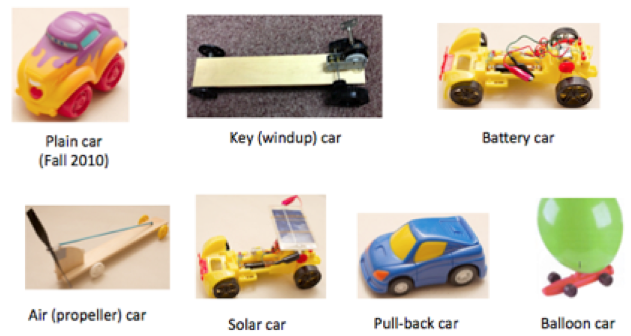

After Sharon's students worked on Toy Cars for 14 days in the fall, she returned to the topic three months later. Whereas the students had previously focused on the plastic toy car, now Sharon wanted them to try to understand the mechanisms underlying how other toy cars work: the key (or windup) car, the pullback car, the air (or propeller) car, the balloon car, the solar car and the electricity (battery-powered) car. She began by showing students some of the various cars and then asked them to work in groups to figure out how the cars worked.

This first video clip shows Sharon introducing the new task that they will be working on over the next several weeks. Sharon had placed one of the cars at each table and wanted the group at that table to talk about how that car works.
Video Clip 1 (Day 1)
Sharon spends the rest of the period moving around among the groups, listening and asking questions to help the group members explain how their toy car works.
First, she visits a table with Jennifer, Scarlett and Alexis. They are exploring the propeller (air) car, and in their initial explanation they use an analogy with the propellers of a ship.
Video Clip 2 (Day 1)
| Some things to notice:
(click to expand) |
Sharon returns to the same group about six minutes later to see what progress they have made. Jennifer's group has figured out how to make the car go either forward or backward.
Video Clip 3 (Day 1)
| Some things to notice:
(click to expand) |
Sharon visits another group with Issac and Jimmy, who are working with the windup car. She asks them how it works and Issac talks about how the metal part ‘wants to twirl back.’ Sharon focuses on the word, ‘wants,’ and asks whether the car is thinking (like a person).
Video Clip 4 (Day 1)
| Some things to notice:
(click to expand) |
Sharon returns to the same group about eleven minutes later to see where they are in their thinking about the windup car. Issac tells her that, after winding, the coiled metal tries ‘to get back to its normal size.’ There is a long discussion about what that means. Issac gets a sheet of paper and rolls it up to help clarify his meaning. Jamir joins the group and tries to help out with the explanation. Sharon is persistent in trying to help the students offer a mechanistic explanation for why the coil unwinds.
Video Clip 5
| Some things to notice:
(click to expand) |
In another group that Sharon visits, Pricila, Teresa and Maribel are trying to explain how a blown-up balloon pushes out the air when it deflates.
Video Clip 6 (Day 1)
| Some things to notice:
(click to expand) |
Sharon spends time with the group of Destiny, Jourdan and Jamir. She is asking them how the solar car works. Her focus here is both on clarifying the meaning of their words, and helping Jourdan stay focused on what Jamir is saying.
Video Clip 7 (Day 1)
| Some things to notice:
(click to expand) |